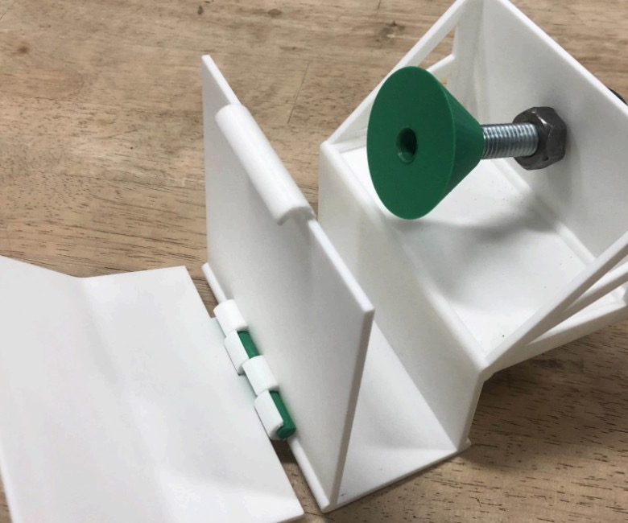

OVERVIEW
Accessible foot-operated refrigerator door opener designed for users with limited hand mobility. Engineered for mass manufacturing at approximately half the cost of existing commercial solutions while maintaining ergonomic usability.
PROBLEM STATEMENT
Standard refrigerator handles require grip strength and wrist rotation that many users with mobility limitations cannot perform. Existing assistive openers are expensive and often poorly integrated with common fridge geometries.
Design goal: A foot-pedal actuated mechanism that pulls the door open via a hinged arm, mountable to standard refrigerator frames without permanent modification.
MECHANISM DESIGN
Hinged lever arm transfers foot-pedal force to a door-grip assembly. Barrel hinge with contrasting pin allows smooth rotation. Bolt-and-nut fastening secures the grip to varied door handle geometries.

| COMPONENT | MATERIAL | FUNCTION |
|---|---|---|
| Frame plates | 3D-printed polymer | Structural support, mount to fridge |
| Hinge assembly | Polymer + metal pin | Convert pedal force to pull motion |
| Door grip | Polymer + bolt | Attach to handle, transfer opening force |
| Pedal arm | Polymer | Foot-actuated input |
CAD & TOLERANCING
Full assembly modeled in Solidworks with GD&T specifications for hinge clearance, pedal travel, and grip fit tolerances. Iterative prototyping via 3D printing validated fit before finalizing tolerances for injection molding.
- Assembly mates for hinge rotation range of motion
- Clearance fits for bolt-through grip attachment
- Wall thickness optimized for printability and strength
DFM & COST
Design for manufacturing analysis targeted injection molding with minimal part count. Simplified geometry and standard fasteners reduce tooling cost. Final design achieves ~50% cost reduction vs. leading competitor while meeting accessibility requirements.